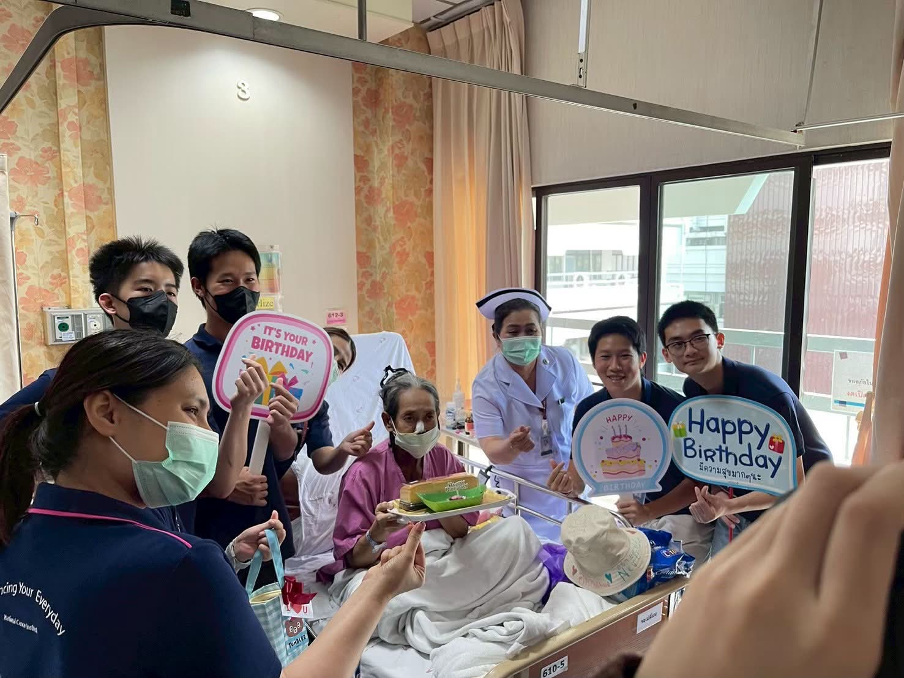
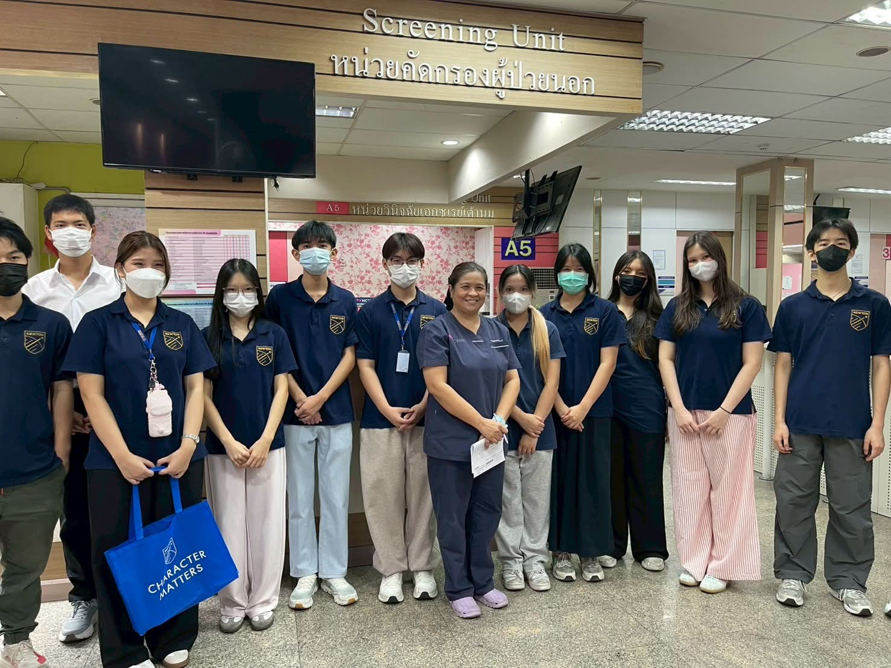
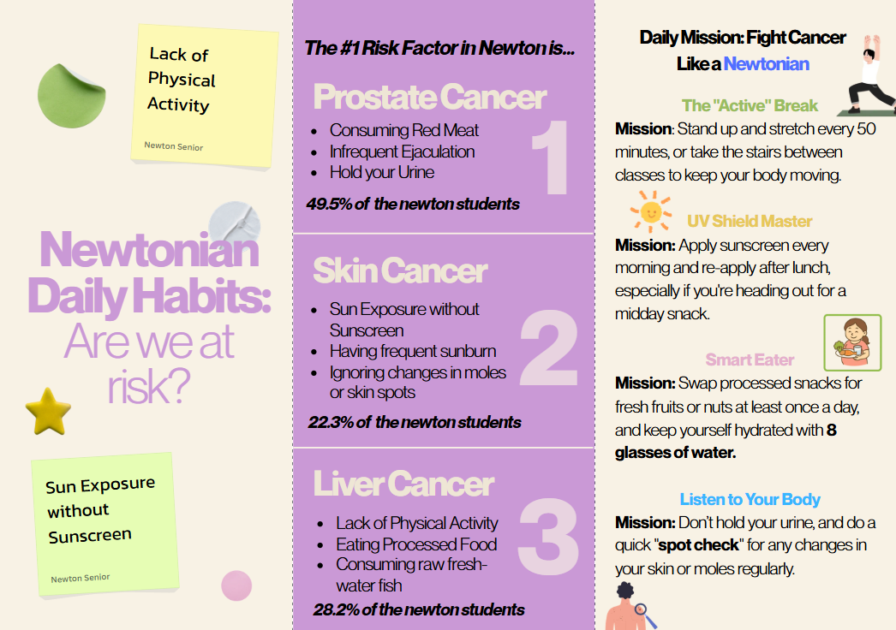
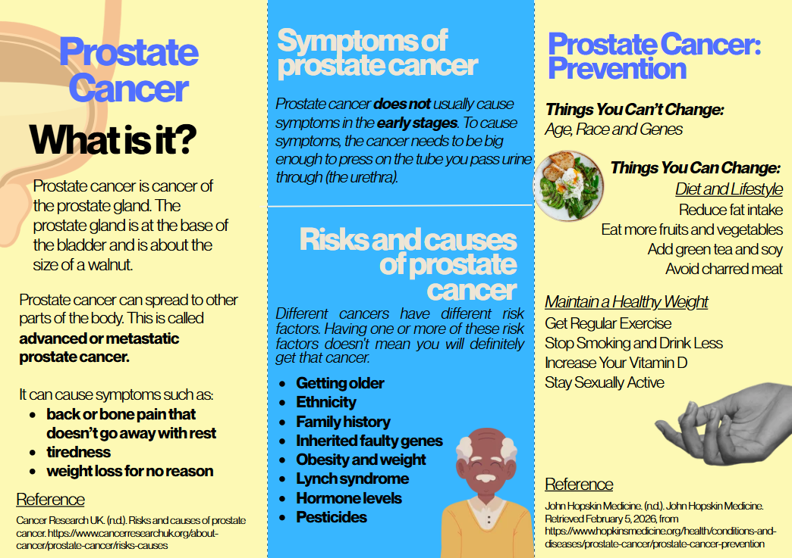
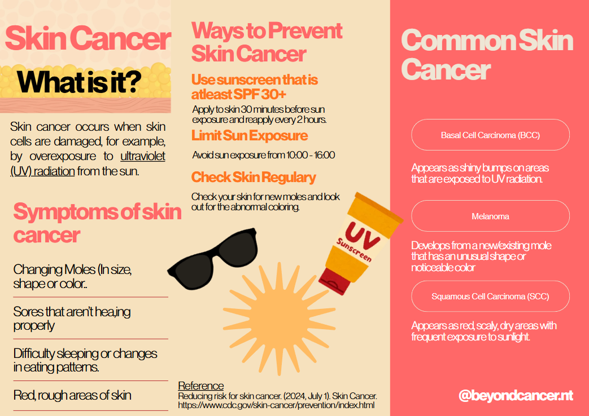
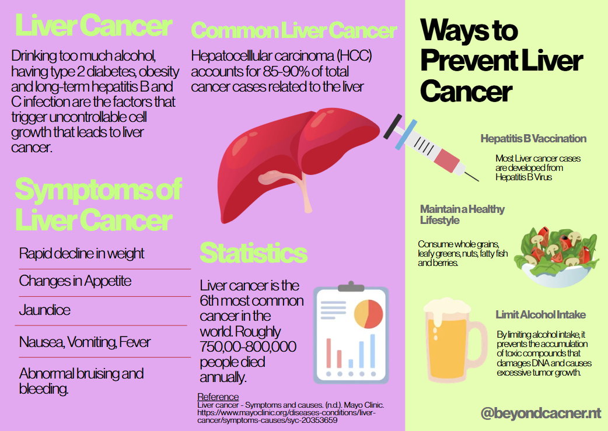
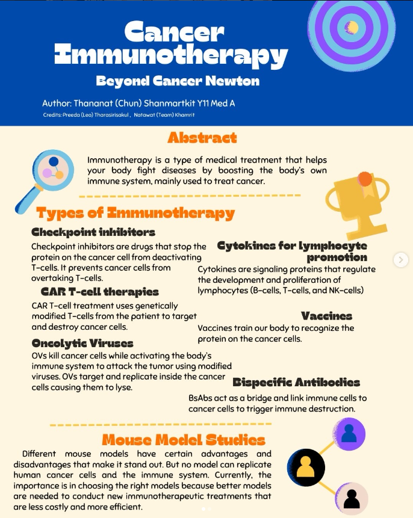
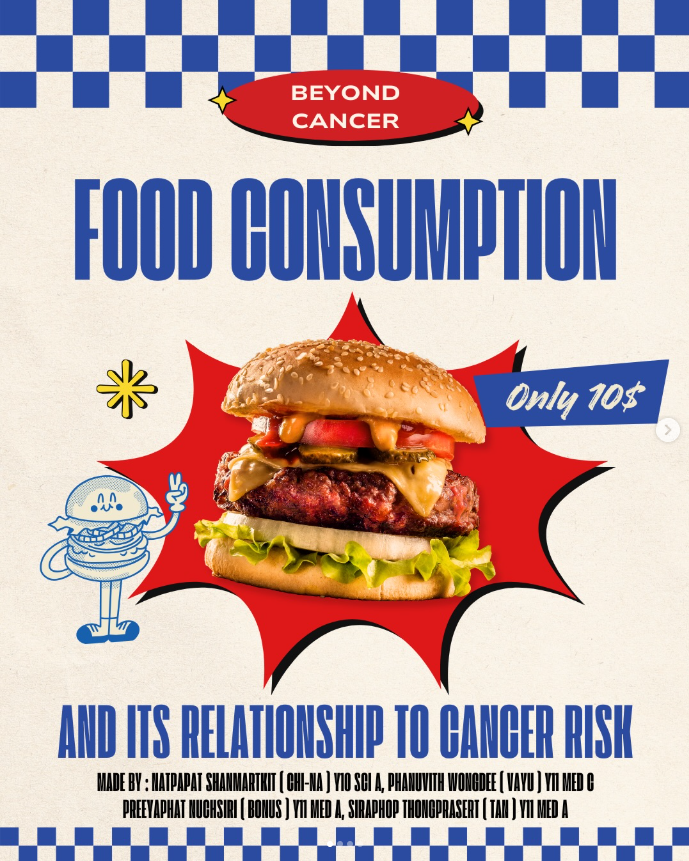
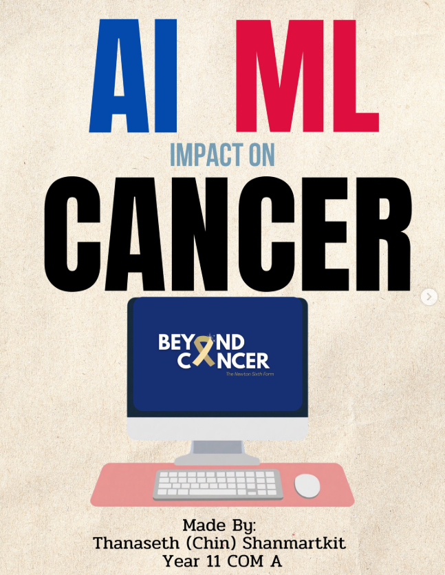

Hospital volunteering, fundraisers, National Cancer Day, literature reviews, and the posters behind them — pulled straight from our Instagram, @beyondcancer.nt.


📷 3 photos






This is only a selection — every poster, fundraiser, and event we've run is posted in full on Instagram.
See the Full Archive on Instagram